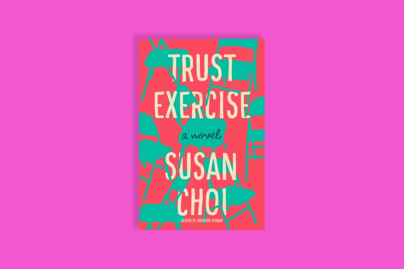
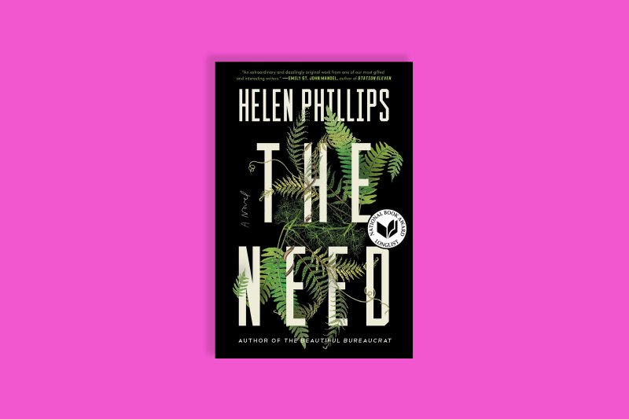

Books Inspire us, motivates us, encourage us and always make us see the right path, it makes us understand that nothing is impossible in this world, It allows us to take action and help us to know our true potential, Books illuminates our life, Books show us our passion and make us understand that all Limits are self-imposed, Limits are usually in our mind, Books have the potential to upgrade our conviction to match our destiny.
I can say there is no end to the list of my favorite books but here, i tried to list some of them. I really admire people who read books and i advice those who do not to read because it is good to explore.
The novelist, essayist and poet blends the perspectives of a quick and ruthless high school debate champion, his psychologist parents and a misfit peer in The Topeka School, a poignant examination of “toxic masculinity” and its manifestations in speech. Adam Gordon, a character first introduced as a grown man and a poet in Lerner’s debut novel Leaving the Atocha Station, is a slick talker, a chameleon as comfortable dominating his school’s social scene as he is in his parents’ home. Adam’s winning approach to competition—subjecting his challengers to “the spread,” where they’re forced to respond to a blast of ideas at the pace of drinking from a firehose—deftly reflects the demise of civil discourse.
A devastating story born of real-life heartbreak, Yiyun Li’s Where Reasons End places a mother in conversation with her son after losing him to suicide. Li wrote her highly original and deeply affecting novel in the wake of her own son’s suicide. In the book, the narrator visits with 16-year-old Nikolai in a liminal world of Li’s creation, somewhere between the realms of the living and the dead. As the two relive their old ways of being together and speaking to one another, Li unfolds a moving meditation on the limitations of language—a tool that is equipped to relay neither life’s most harrowing pain nor its fiercest love.
In the hormone-laden and pressure-fueled world of a performing arts high school, two acting students get locked in a heady romance—only to be watched, judged and influenced by their peers and even their drama teacher, a man with questionable motives. National Book Award winner Susan Choi crafts a visceral adolescent world rife with tension, sexual and otherwise, and renders the insecurity that accompanies it with excruciating realism. That is, until she introduces a shift in perspective midway through the novel that undermines the veracity of the story. With a boldly unconventional structure, Choi points to essential truths about power and who gets to control the narrative.
It’s a classic opening: a woman hears an intruder in her home while her husband is away, grabs her two young kids and hides in terror. But the true power of Helen Phillips’ brilliantly paced thriller emerges when Molly, a paleobotanist, comes face to face with the only person in the world who can shake her identity as a mother—a person who brings her to question her very reality. Phillips taps into the overwhelming anxiety that comes with love in its deepest, truest form, a sense of fierce protectiveness one need not be a parent to understand.
